Navigate
Transformational
Space
- …
Navigate
Transformational
Space
- …
- Navigate Transformational Space
- WHAT IS TRANSFORMATIONAL SPACE?- The work of a Possibilitator is different from the work of an Educator. - Both are needed. - An Educator teaches you what to - think aboutin classes.- A Possibilitator navigates you through transformational thoughtware-upgrade and 3 Phase Healing processes - that clarify what you - think-withduring encounters.- You may be serving as an Educator and might more appropriately serve as a Possibilitator. - Or - vice versa...- Indeed, there are Possibilitators from each of the four - Archetypal Lineages,- yet anyone successfully delivering transformational thoughtware-upgrades - will - consciously or unconsciously - apply a shared assortment of specific - but unusual Possibilitator Skills. - This platform intends to research, distinguish, and document these skills, - and share them throughout the global - Possibilitator Trainingcommunity.- Everything on this website is open-code thoughtware. - This means it is - copyleftso that- it cannot be copyrighted.
- TEACHING VS. LEARNING (from Carl Rogers)- "It seems to me that anything that can be taught to another is relatively inconsequential, and has little or no significant influence on behavior... I have come to feel that the only learning which significantly influences behavior is self-discovered, self-appropriated learning. Such self-discovered learning, truth that has been personally appropriated and assimilated in experience, cannot be directly communicated to another. As soon as the individual tries to communicate such experience directly, often with a quite natural enthusiasm, it becomes teaching, and its results are inconsequential...- When I try to teach, as I do sometimes, I am appalled by the results, which seem a little more than consequential, because sometimes the teaching seems to succeed. When this happens I find that the results are damaging. It seems to cause the individual to distrust his [or her] own experience, and to stifle significant learning. Hence I have come to feel that the outcomes of teaching are either unimportant or hurtful. When I look back at the results of my past teaching, the real results seem the same - either damage was done, or nothing significant occurred...- As a consequence, I realize that I am only interested in being a learner, preferably learning things that matter, that have some significant influence on my own behavior...- I find that one of the best, but most difficult ways for me to learn is to drop my own defensiveness, at least temporarily, and to try to understand the way in which [another's] experience seems and feels to the other person.- I find that another way of learning is for me to state my own uncertainties, to try to clarify my puzzlements, and thus get closer to the meaning that my experience actually seems to have...- It seems to mean letting my experience carry me on, in a direction which appears to be forward, toward goals that I can but dimly define, as I try to understand at least the current meaning of that experience."
- SEDUCE VS. EDUCE (from Derrick Jensen)- "The word EDUCATION comes from the Latin root E-DUCERE, meaning 'to lead forth' or 'to draw out'. Originally it was a midwife's term meaning, 'to be present at the birth of'.- I would contrast that with the root of the word SEDUCE, which is closely related, but with a striking difference. To EDUCE is 'to lead forth'. To SEDUCE is 'to lead astray'...- I wish I had suggested that our departments of education be called, if we were to be honest, departments of seduction, for that is what they do: lead us away from ourselves."- (from - Walking On Water: reading, writing, and revolution, by Derrick Jensen
- Changing what you see with, changes what you can see...
- Authentic Necessity- Here is an audio recording of an 'Amazing Space' meeting at the- Cavitation Bridgehouse- on Crete, 7 January 2025.- (Yes, in the photo, that is actually snow in the mountains south of Chania on Crete...)- One of the traditions of the Cavitation Bridgehouse is the Amazing Space.- Every evening from 5-7pm, we would gather around the blazing fire for- deepening the context- of Archiarchy, by surfing on the- authentic necessity- and- co-commitment- of the 12-person constellation in the Cavitation Bridgehouse.- During one of those Amazing Spaces, Devin Gleeson asks for- Possibility- about interviewing Extraordinary Beings. Time warps as Devin prepares for his interview planned for the next day. Simulteanously, we listen to a recording of Clinton Callahan interviewing Jim Zarvos, a world-class transformation trainer, 15 years ago, in a bar. At the same time, the Cavitation Bridgehouse interviews Clinton about his wizard skills as an interviewer and global gameworld builder.- The core question weaving these different interviews is: How do you stoke your own Authentic Necessity?- This audio is courtesy of Vera Franco and Daway Chou-Ren who had the reflex of turning on their voice recorders the moment things started getting juicy.- Would that we all had such amazing impulses to document and pass on the treasures we receive...- NOTE: The related Jim Zarvos Interview is posted below in 3 Parts.- Jim Zarvos Interview by Clinton Callahan Part 1 circa 2003 in Latvia- The recording below is divided into 3 Parts, each with its own Matrix Code.- After listening to the full recording of Part 1, please register Matrix Code NCRADIO3.59- in your- free account- at- StartOver.xyz- . Listening to each recording is worth 1 Matrix Point.- Jim Zarvos Interview by Clinton Callahan Part 2 circa 2003 in Latvia- After listening to the full recording of Part 2, please register Matrix Code NCRADIO3.60- in your- free account- at- StartOver.xyz- . Listening to each recording is worth 1 Matrix Point.- Jim Zarvos Interview by Clinton Callahan Part 3 circa 2003 in Latvia- After listening to the full recording of Part 3, please register Matrix Code NCRADIO3.61- in your- free account- at- StartOver.xyz- . Listening to each recording is worth 1 Matrix Point.
- PREREQUISITES- The Possibilitator Skills described in this website are not merely recommendations or good ideas. - These skills are just as much structural requirements for a Possibilitator as wings and a propeller are for an airplane. - If these skills are not already active parts of your daily interactions, worldview, and way of life, you will be like a donkey without hay. - Relocating the - Point Of Originof your daily life includes behavior changes, one step at a time, adding up over years.- Remember films such as - Secret Society,- The Last Samurai,- Wonder Woman(#1, not #2),- The Sorcerer's Apprentice,- Fried Green Tomatoes,- Batman Begins,- Avatar, and- Dr. Strange, where the most exciting moments are the practice scenes, where the protagonist is faced with not knowing how and an irresistible necessity to learn? This is why practicing together in- your Teamsis crucial to succeeding. Learning something new, especially after you are older than 18 years, is a miracle. You only do it if you truly must. Your Team mates can cause that necessity for you by making '- Pirate (archived — not captured)- Agreements' to help each other succeed or else!- We highly encourage you to create - PracticeTeams for yourself. It does not matter if you use a- 3Cell,- Possibility Team,- Practice Space,- Study Group,- Research Team,- Women's Circle,- Men's Circle,- SPARK Experiment Group, etc. What matters is that you practice consistently with real-time- feedback and coaching, and that you experience- High Level Funwhile practicing! - Carry Your Possibility Stone At All Times- Matrix Code - POSSSKIL.01- Your Possibility Stone is your primary tool to shift into and hold the identity of ' - Possibilitator'.- Your Possibility Stone is a pain-in-the-ass reminder that at any moment, no matter what is happening, you have the choice to originate your speaking, thinking, feeling, and actions in your - Survival-Box Defense Mechanisms- Bright Principles- The experiment isfor a week,- every timeyou are faced with a problem, physically hold your Possibility Stone between you and the problem. No matters whether the problem is a physical (you broke your friend' smartphone screen), intellectual (you are in an argument), emotional (someone has just projected on you that you are persecuting them), energetic (someone keeps trying to get into your personal bubble of space), archetypal (you block every offer you are given to serve through your Archetypal Lineage).- Physically hold your Possibility Stone between you and the problem, and let it be a portal to give you 10 different ways you could shift out of it being a problem situation. - List the 10 possibilities into your - Beep! Book- Choose two of the possibilities and try them. - After completing this experiment, please register Matrix Code POSSSKIL.01 in your free account at StartOver.xyz. This Experiment is worth 1 Matrix Point.  - Live With Your- Beep! Book- Matrix Code - POSSSKIL.02- Your - Beep! Bookis your self-made Map of the- Pathyou've walked, the traps you've fell into, the cliff you've jumped, the detour you've taken to be exactly where you are right now.- As a Possibilitator, you are bridge-builder. Your - Beep! Booknotes are the design of the bridge that you've built for yourself. A bridge that now could be used by a entire generation of edgeworkers to get to where you are. Never undermine the value of your notes!- Treat your - Beep! Bookthe way Christopher Columbus look upon his outline of the 'New Worlds' (they were new worlds for him and his fellow Europeans): as world changing (thought)-maps!- The experiment is for - three days per weekfor an entire month, write 3 pages about your exploration at the edge of the outer borders of your known territory. This can range from short stories, thoughtmaps, drawings, insights, distinctions and its unfoldings, a process, to questions and its possible answers, ...- After completing this experiment, please register Matrix Code POSSSKILL.02 in your free account at StartOver.xyz. This Experiment is worth 5 Matrix Points.
- Live With Your- Beep! Book- Matrix Code - POSSSKIL.02- Your - Beep! Bookis your self-made Map of the- Pathyou've walked, the traps you've fell into, the cliff you've jumped, the detour you've taken to be exactly where you are right now.- As a Possibilitator, you are bridge-builder. Your - Beep! Booknotes are the design of the bridge that you've built for yourself. A bridge that now could be used by a entire generation of edgeworkers to get to where you are. Never undermine the value of your notes!- Treat your - Beep! Bookthe way Christopher Columbus look upon his outline of the 'New Worlds' (they were new worlds for him and his fellow Europeans): as world changing (thought)-maps!- The experiment is for - three days per weekfor an entire month, write 3 pages about your exploration at the edge of the outer borders of your known territory. This can range from short stories, thoughtmaps, drawings, insights, distinctions and its unfoldings, a process, to questions and its possible answers, ...- After completing this experiment, please register Matrix Code POSSSKILL.02 in your free account at StartOver.xyz. This Experiment is worth 5 Matrix Points.  - Invent Your Own Possibilitator Expansion Experiments- Matrix Code - POSSSKIL.03- How can you ask your clients to go to the edge of their Box if you are not willing to do the same? Your clients are inspired by what you do, not what you say. - Adventuring yourself to the edge of your Box - for real, not in your mind - materialize as experiments. You cannot know what could happen at the edge of your Box, otherwise it wouldn't be an edge. The only way to discover how it could go is by experimenting. - A big hint that you are Possibilitator is that, experimenting is one of the ecstasy of your life. If it is not yet, you can train yourself in experimental ecstasy. I promise its High Level Fun for your Adult Egostate! - Experimenting for a Possibilitator is as natural as wanting to drink water in the hot dry dusty desert. Experimenting goes without questioning. The questioning comes from your Gremlin. - Every day for the rest of your life,invent and do one experiment per day until it becomes a second nature. Register your Matrix Points for this Experiment after doing one conscious intentional transformation experiment per day for seven days in a row.- Experiments can vary in size, time, space, attention and resources. Here are some sample Experiments of the kind we mean: - Eat your morning porridge with a fork.
- Knock on your neighbor's doors and collect one non-physical thing from each of them until you have 10 things (such as a belief, a story, a conclusions, etc...).
- Learn a poem by heart and find a valuable way to recite it once a day.
- Create a whole new gameworld.
- Draw the flag of your nanonation.
- Appreciate the quality of your boss to them out loud at a meeting.
- Vacuum your place in less than 5 minutes.
- Light a candle in your reading space, etc...
- There are so many possible experiments at every time of the day. Commit to doing at least one each day for a whole month until this is your natural state of being in the world. - After completing this experiment, please register Matrix Code POSSSKILL.03 in your free account at StartOver.xyz. This Experiment is worth 12 Matrix Points. - Transform Yourself In StartOver.xyz- Matrix Code - POSSSKIL.04 - Make The Distinctionary Your New Home- Matrix Code - POSSSKIL.05
- Invent Your Own Possibilitator Expansion Experiments- Matrix Code - POSSSKIL.03- How can you ask your clients to go to the edge of their Box if you are not willing to do the same? Your clients are inspired by what you do, not what you say. - Adventuring yourself to the edge of your Box - for real, not in your mind - materialize as experiments. You cannot know what could happen at the edge of your Box, otherwise it wouldn't be an edge. The only way to discover how it could go is by experimenting. - A big hint that you are Possibilitator is that, experimenting is one of the ecstasy of your life. If it is not yet, you can train yourself in experimental ecstasy. I promise its High Level Fun for your Adult Egostate! - Experimenting for a Possibilitator is as natural as wanting to drink water in the hot dry dusty desert. Experimenting goes without questioning. The questioning comes from your Gremlin. - Every day for the rest of your life,invent and do one experiment per day until it becomes a second nature. Register your Matrix Points for this Experiment after doing one conscious intentional transformation experiment per day for seven days in a row.- Experiments can vary in size, time, space, attention and resources. Here are some sample Experiments of the kind we mean: - Eat your morning porridge with a fork.
- Knock on your neighbor's doors and collect one non-physical thing from each of them until you have 10 things (such as a belief, a story, a conclusions, etc...).
- Learn a poem by heart and find a valuable way to recite it once a day.
- Create a whole new gameworld.
- Draw the flag of your nanonation.
- Appreciate the quality of your boss to them out loud at a meeting.
- Vacuum your place in less than 5 minutes.
- Light a candle in your reading space, etc...
- There are so many possible experiments at every time of the day. Commit to doing at least one each day for a whole month until this is your natural state of being in the world. - After completing this experiment, please register Matrix Code POSSSKILL.03 in your free account at StartOver.xyz. This Experiment is worth 12 Matrix Points. - Transform Yourself In StartOver.xyz- Matrix Code - POSSSKIL.04 - Make The Distinctionary Your New Home- Matrix Code - POSSSKIL.05 - Do Weekly S.P.A.R.K. Experiments as a Team- Matrix Code - POSSSKIL.06- You can, of course, do the S.P.A.R.K. Experiments alone. You will learn so much. - However, if you do S.P.A.R.K. Experiments in a weekly online or offline S.P.A.R.K. Study Group, your whole Team will learn so much, AND... you will also learn about - Spaceholding- Space Navigating. After you have delivered 5 S.P.A.R.K. Study Group meetings, please register your 3 Matrix Points at- StartOver.xyz- Thoroughly doing SPARK Experiments weekly applies discipline to your commitment, building up Trainer Muscles in - 5 Bodies
- Do Weekly S.P.A.R.K. Experiments as a Team- Matrix Code - POSSSKIL.06- You can, of course, do the S.P.A.R.K. Experiments alone. You will learn so much. - However, if you do S.P.A.R.K. Experiments in a weekly online or offline S.P.A.R.K. Study Group, your whole Team will learn so much, AND... you will also learn about - Spaceholding- Space Navigating. After you have delivered 5 S.P.A.R.K. Study Group meetings, please register your 3 Matrix Points at- StartOver.xyz- Thoroughly doing SPARK Experiments weekly applies discipline to your commitment, building up Trainer Muscles in - 5 Bodies
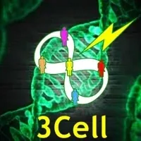
- Enter A 3Cell For Making Evolutionary Pirate Agreements- Matrix Code - POSSSKIL.07- The purpose of your 3Cell is to encourage Authentic Evolution. As a Trainer, you cannot do it all by yourself. The lone-wolf strategy has maybe work until now but if you are reading this website, you you have found its limit. - As a Trainer, probably more than you think, you need encouragement, you need a team that has your back, you need a team that will give your honest, clear, evolutionary feedback emerging from their commitment to your own evolution and not for their Gremlin. - Experiment - POSSSKILL.07:Create a 3Cell of Trainers - be them Possibility Management Trainer or from a different context (preferably a context where initiation and transformation is at the center). Make a WhatsApp (or Telegram, Signal, Facebook) group.- Commit to them. - Connect to them. - Be clear with them. - This might announce the start of your new gameworld! - Become Present- Matrix Code - POSSSKIL.08- Becoming Present is about becoming more of You right now, and now, and now. - Experiment - POSSSKILL.08: - Take Back Your Attention- Matrix Code - POSSSKIL.09- Your attention is your most valuable resource. Without having your attention back, you cannot have access to your other resources. - As a Trainer, you need to have taken back your attention from the dazzling storyworlds that modern culture is trying to sell you at the fastest rate possible. - The storyworlds of being cool, skinny, young, rich, and beautiful. - The storyworlds of resentment, low drama, being right, or making wrong. - The storyworlds of 'I need money to live', ' I have to do something to have value for others', 'I can do it by myself'. - Experiment - POSSSKILL.09:- 1) For the first part of the experiment, get your - Beep! Bookand write a (long) list of the common things that unconsciously hijacked your attention. Find example of what capture your attention here:- http://yourattention.mystrikingly.com/#common-things.Write in details, what, how often, how long, ...- 2) Circle 5 of those attention eating things that you would like to take your attention back from. - 3) For the next 5 weeks, take back your attention from those 5 things, one per week. During the first week, choose one of the 5 thing. Notice and catch yourself when you are giving your attention to it. When you catch yourself, pause. Really pause. Make a different decision. Put your attention on something else. For example, what you are trying to numb by letting your attention be hijacked. - Live In Neutral Self Observation- Matrix Code - POSSSKIL.10- Remind yourself to Observe Yourself- Get yourself a reminder - a bracelet, an alarm, a pin, a notification on your computer, a post-it - that says 'Self-Observation'. Every time, you see it/hear it, position your observe outside of yourself. It feels like someone is looking over your shoulder. BEWARE: this observer is absolutely neutral. If you are judging yourself, you are not observing yourself. - See how long you can keep doing what you were doing and observe yourself at the same time. - Self-observation is a muscle like your attention or keeping your center. Muscle only get stronger if you train them. This experiment is about training you neutral self-observation muscle. - Become An Expert In Box Mechanics- Matrix Code - POSSSKIL.11 - Find Out Which Box Design You Use- Matrix Code - POSSSKIL.12- Make a list of 50 characteristics of your Box.- 1) Go to the 18 Boxes bubble and find out which of the 18 Boxes your Box is designed on. Your Box can be a clear design on one Box or can have been inspired by different ones. - 2) Make a list of 50 characteristics of your Box design right now (your Box has probably already changed while doing evolutionary work). Your Box characteristics are not bad or good. Being aware of them gives your choice about them. - Distinguish Your 5 Bodies- Matrix Code - POSSSKIL.13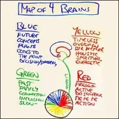
- Find Out Which Dominant Brain You Have- Matrix Code - POSSSKIL.14- All of us has four brains. However, for most of us, they are not balanced. You have one brain that is dominant. Your dominant brain determines what it important, how to connect, how to relate, what are the different steps for a project, what is at the center of the projects, what are the values, ... It's a filter through which to look at the world. - It could be that you are at war with one or your teammate because you don't know which dominant brain you have and which dominant they have. It is so simply revolutionary to carry this distinction. It save my life more than once! - EXPERIMENT:- To discover which dominant brain you are, pick one object next to you, any object and look at it. Pay attention to what are your first impulses (not more than 3 impulses!) towards it. What comes to you first in relation to that object? - I just did the experiment with someone. I threw him a pen and asked him: 'What are you first impulses towards the pen?' - He say: 'Teal'. I said: 'What?'. He: 'The color teal.' Me: 'Ah. Thank you.' - He say: 'I now want to put it back in the plastic bag where it belongs.' - I say: 'Thank you.' and ask him: 'What brains do you think you have?' - He say: 'Blue and yellow.' - I say: 'Yes. You telling me the color of the pen is your Blue Brain at work, and then wanting to put it back when it belongs, is your Yellow Brain at work.' - Distinguish Your Box And Your Being- Matrix Code - POSSSKIL.15 - Disidentify From Your Survival Strategy (Box)- Matrix Code - POSSSKIL.16- After you distinguish between your Box and your Being, the next step is to free your identity from your survival strategy - your Box. - Up to 18 years old, out of survival imperative, we identity ourselves with our Box. If we didn't do that, we would be too dangerous for our environment - and maybe for ourselves - that we would die. At 18 years, you should have had this choice. Most of us have not. - It doesn't matter, you get the choice now. The choice to have your identity be independent from your survival strategy. Great, how? By making a gap between 'you' and your survival strategy. - EXPERIMENT: Make a gap between 'you' and your survival strategy- The gap can be as thin as sheet of paper, just enough for your two parts to be independent from each other. After making your list of 50 Box survival characteristics, - every timeyou notice one of the behaviors coming up. Pause. Don't try to make it go away. This is probably another one of your Box strategy : to not look at your Box strategy. - Understand Memetics- Matrix Code - POSSSKIL.17- The ideas you think with are called - memes.- Memes are like genes. - In the same way that genes are the smallest instructions for the design of your physical body... - memes are the smallest instructions for the design of your intellectual body... your mind. - Your memes are what you think with. When you think about what you think with you get a chance to start over. - Memetics is the study, detection, creation, transformation and use of memes. - EXPERIMENT:- Read all the scripts from memetics engineering sessions in the Memetics Bubble. Then ask another fellow trainer to have a session with you where you both will look at each other's memes using the principles of Memetics Engineering. - The point here is not to change the memes that you are using. The point of this experiment is to develop the skill to look closer and closer at the meme at work in your Box and in their Box. - You might, at some point, almost feel the memes engage and trigger a whole bunch of other memes. Quite thrilling! - Make Your Story-Making A Conscious Choice- Matrix Code - POSSSKIL.18 - Exit The World Of Right/Wrong and Good/Bad- Matrix Code - POSSSKIL.19- The dichotomy Right/Wrong, Good/Bad installed in us from a too young age feeds from the Shadow World. If I'm right, then you are wrong. If this is good, then one day I could do something bad. On and on... It's terrifyingly so embedded in our language that most of us use it without even noticing it. - EXPERIMENT: Delete 'Right', 'Wrong', 'Good', 'Bad' from your vocabulary.- It takes unbroken attention to your speech to not pronounce those words. When you catch yourself saying it, you are sleeping. Stay awake. Keep your attention for as long as it takes. You will start to feel the pain of hearing that word in your and other's mouths. - Extra: you can do this also with words such as 'like', 'so', 'hum' or using 'you' instead of 'I'. - Own Your Problems- Matrix Code - POSSSKIL.20- EXPERIMENT:- When faced with a problem between you and someone else. - Consciously Use Your 3 Powers- Matrix Code - POSSSKIL.21- EXPERIMENT: Consciously Use Your Power of Asking- by Asking the Next Question.- Asking the next question in the space can take it either deeper, up or sideways into another space. Questions can be the steering wheel of the space deciding where are we going next. - To bring a space deeper, question the assumptions the space is made of that the people in the space are maintaining. Look in the dark places. - To bring a space up, question the Bright Principles, the purpose of the space (you would first have to find you is the spaceholder... it is not always the one that declare itself so. Keep your senses out!), or question who is awake and who is not. - To bring the space sideways, ask a question for which the answer lays in a different space. Ask the question while being connected with people and take them with you onto the next adventure. - Practice those three types of questions. You don't ever have to be a victim of the quality of the space anymore. - Also practice noticing the next question the space needs - even you are not the one who says it. Notice where the space goes with every question. - Experiment - TRSKILLS.20: Consciously Use Your Power of Choosing- The power of choosing for a Trainer is imminent. When faced with a client, there's often so many doors to open, so many golden keys. How to choose? Which one to choose? If you can't choose, you cannot support your client. They are paying you because they can't choose themselves. - By choosing one option, you have to grieve the lost of the opportunity to choose the other options. It is huge. You are in luck that you've learn how to feel and how to feel sad. - First, practice choosing with more anger than usual. This or that. Pasta or salad? Movie or book? Which movie? A phone or video call? Dress or pants? Walk or bike ride? This time or that time? You are face with choice all day long. Every time you are faced with a choice, raise your anger to 18% and make the choice and commit to it. For a while at least. - Experiment - TRSKILLS.21: Consciously Use Your Power of Declaring- Practice consciously using your power of declaration by declaring to your circle what you are. 'I am a memetic engineer.' 'I am a mid-wife of edgeworkers.' 'I am a witch.' 'I am psychic.' 'I am a gameworld alchemist.' - Then you have to prove it. - Use your power of declaration to put yourself in a place where your Bright Principles, your Archetypal Lineage, and your Being have necessity to come through no matter what. No matter how your Box and Gremlin are trying to sabotage you. - Take a risk! What could happen? Maybe that it works... - Become Radically Responsibility for Time- Matrix Code - POSSSKIL.00- Experiment - TRSKILLS.22:Carry a watch. Buy a watch and wear it. How can you be responsible for time if you don't know what time it is? Your phone is not your watch, it contains too many distraction and brings in the gameworld of technology into your space. Asking someone else for time is giving your responsibility away. Buy a damn watch!- Experiment - TRSKILLS.23:Be a Time Maker.- Experiment - TRSKILLS.24: Moving Faster Than the Speed of Time or 'Whizzbang'.- Next time you clean your bathroom, get an timer set for 8 min. Press start and GO! The only way you can do this is to turn your mind off and to just move faster than the speed of thinking. Do the next task, and the next task all under 8 min. It's ecstatic I promise! - If you want to spend more than 8 min cleaning your bathroom, and have no time to make your website, experiment, read your book, etc... then something else is really going on. - Minimize Your NOW- Matrix Code - POSSSKIL.00 - Exit Verbal Reality and Enter Experiential Reality- Matrix Code - POSSSKIL.00
- Exit Verbal Reality and Enter Experiential Reality- Matrix Code - POSSSKIL.00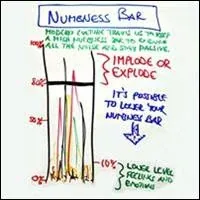
- Lower Your Numbness Bar- Matrix Code - POSSSKIL.00 - Live On The New Map Of Feelings & Phase 2 of Feelings Work- Matrix Code - POSSSKIL.00- As a Trainer it is so crucial that you live on the New Map of Feelings and that you are USING your feelings for your everyday life, not simply talking about them. Talking about your feelings is Phase 1 of feelings work. - When you move to Phase 2 of feelings work, you don't lose Phase 1. Meaning something it is useful and necessary to talk about your feelings while you are feeling them. Sometimes... - Differentiate Feelings From Emotions- Matrix Code - POSSSKIL.00- Feelings are for handling things. Use conscious feelings for consciuosly handling things! - Emotions are for healing things. Use your conscious emotions for consciously engaging in Emotional Healing Processes. - Take Back Your Voice- Matrix Code - POSSSKIL.00
- Live On The New Map Of Feelings & Phase 2 of Feelings Work- Matrix Code - POSSSKIL.00- As a Trainer it is so crucial that you live on the New Map of Feelings and that you are USING your feelings for your everyday life, not simply talking about them. Talking about your feelings is Phase 1 of feelings work. - When you move to Phase 2 of feelings work, you don't lose Phase 1. Meaning something it is useful and necessary to talk about your feelings while you are feeling them. Sometimes... - Differentiate Feelings From Emotions- Matrix Code - POSSSKIL.00- Feelings are for handling things. Use conscious feelings for consciuosly handling things! - Emotions are for healing things. Use your conscious emotions for consciously engaging in Emotional Healing Processes. - Take Back Your Voice- Matrix Code - POSSSKIL.00 - Do The 3-3-3 Practice: Rage Work- 3 Minutes 3 Times Per Week For 3 Months- Matrix Code - POSSSKIL.00 - Enhance Your Ability To Say, "- STOP!" and "- NO!"- Matrix Code - POSSSKIL.00 - Recognize The Five Phases Of Change- Matrix Code - POSSSKIL.00
- Do The 3-3-3 Practice: Rage Work- 3 Minutes 3 Times Per Week For 3 Months- Matrix Code - POSSSKIL.00 - Enhance Your Ability To Say, "- STOP!" and "- NO!"- Matrix Code - POSSSKIL.00 - Recognize The Five Phases Of Change- Matrix Code - POSSSKIL.00 - Stand In Adulthood As Your Home- Matrix Code - POSSSKIL.00 - Make And Keep A Commitment- Matrix Code - POSSSKIL.00
- Stand In Adulthood As Your Home- Matrix Code - POSSSKIL.00 - Make And Keep A Commitment- Matrix Code - POSSSKIL.00 - Take Back Your Authority- Matrix Code - POSSSKIL.00- Who says you can be a Possibilitator? Where does the Authority come from? The profession of Possibilitator is not on any tax form. - Practice Taking A Resilient Stand- Matrix Code - POSSSKIL.00 - Build Your Ability To Commit- Matrix Code - POSSSKIL.00 - Activate Your Dragon - Give Her A Voice- Matrix Code - POSSSKIL.00 - Quit School... Finally Get Out- Matrix Code - POSSSKIL.00 - Feed Your Gremlin Something Besides Low Drama- Matrix Code - POSSSKIL.00 - Participate In At Least 3- Expand The BoxTrainings with Different Trainers- Matrix Code - POSSSKIL.00
- Take Back Your Authority- Matrix Code - POSSSKIL.00- Who says you can be a Possibilitator? Where does the Authority come from? The profession of Possibilitator is not on any tax form. - Practice Taking A Resilient Stand- Matrix Code - POSSSKIL.00 - Build Your Ability To Commit- Matrix Code - POSSSKIL.00 - Activate Your Dragon - Give Her A Voice- Matrix Code - POSSSKIL.00 - Quit School... Finally Get Out- Matrix Code - POSSSKIL.00 - Feed Your Gremlin Something Besides Low Drama- Matrix Code - POSSSKIL.00 - Participate In At Least 3- Expand The BoxTrainings with Different Trainers- Matrix Code - POSSSKIL.00 - Participate In At Least 10- Possibility LabsWith Different Trainers- Matrix Code - POSSSKIL.00
- Participate In At Least 10- Possibility LabsWith Different Trainers- Matrix Code - POSSSKIL.00 - Transform Your Gremlin- Matrix Code - POSSSKIL.00 - Open Your Pearl- Matrix Code - POSSSKIL.00
- Transform Your Gremlin- Matrix Code - POSSSKIL.00 - Open Your Pearl- Matrix Code - POSSSKIL.00 - Stellate Your Four Feelings Archetypes- Matrix Code - POSSSKIL.00- Your 4 feelings are your rocket fuel and one of the most extraordinary resources for fulfilling your destiny. They are one of the foundational resources for your other resources. - Experientially Identify and Name Your Parts- Matrix Code - POSSSKIL.00- You have parts. Your parts want different things, sometimes those things contradict each other, enough to often drive you crazy. - That's why it is quite useful to distinguish between your different parts and get a grip on what they like and don't like and what are they like - what is their design. One of those part is your Box. Your Box is different from your Gremlin. Your Gremlin is the active part of you that will protect the Box at any cost. The Gremlin is active, the Box is passive. The Box is dead machine covered with reactionary buttons that when pushed reflexively behaves. Your Gremlin at that moment would then in addition attack the person who pushed the button.
- Stellate Your Four Feelings Archetypes- Matrix Code - POSSSKIL.00- Your 4 feelings are your rocket fuel and one of the most extraordinary resources for fulfilling your destiny. They are one of the foundational resources for your other resources. - Experientially Identify and Name Your Parts- Matrix Code - POSSSKIL.00- You have parts. Your parts want different things, sometimes those things contradict each other, enough to often drive you crazy. - That's why it is quite useful to distinguish between your different parts and get a grip on what they like and don't like and what are they like - what is their design. One of those part is your Box. Your Box is different from your Gremlin. Your Gremlin is the active part of you that will protect the Box at any cost. The Gremlin is active, the Box is passive. The Box is dead machine covered with reactionary buttons that when pushed reflexively behaves. Your Gremlin at that moment would then in addition attack the person who pushed the button. 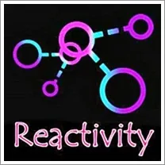
- Take Back Power from Your Reactivity: Buttons, Hooks, Triggers, Traumas, Voices, Imbalances, and Stories- Matrix Code - POSSSKIL.00 - Become A Trigger Hunter- Matrix Code - POSSSKIL.00 - Take Your Balls Back From Your Mother (or) Your Center Back From Your Father And Use The Balls That Are Already In Your Side Of The Court- Matrix Code - POSSSKIL.00 - Distill Your Bright Principles- Matrix Code - POSSSKIL.00 - Relocate Your Point Of Origin to Possibilitator- Matrix Code - POSSSKIL.00 - Discover the Joys of Radical Responsibility- Matrix Code - POSSSKIL.00
- Take Your Balls Back From Your Mother (or) Your Center Back From Your Father And Use The Balls That Are Already In Your Side Of The Court- Matrix Code - POSSSKIL.00 - Distill Your Bright Principles- Matrix Code - POSSSKIL.00 - Relocate Your Point Of Origin to Possibilitator- Matrix Code - POSSSKIL.00 - Discover the Joys of Radical Responsibility- Matrix Code - POSSSKIL.00 - Gain An Accurate Assessment Of Current Reality- Matrix Code - POSSSKIL.00 - Become Radically Responsible For Being You- Matrix Code - POSSSKIL.00
- Gain An Accurate Assessment Of Current Reality- Matrix Code - POSSSKIL.00 - Become Radically Responsible For Being You- Matrix Code - POSSSKIL.00 - Regularly Explore All 3 Worlds- Matrix Code - POSSSKIL.00 - Shift Your Point Of Origin Into Archiarchy- Matrix Code - POSSSKIL.00 - Become A Pirate- Matrix Code - POSSSKIL.00
- Regularly Explore All 3 Worlds- Matrix Code - POSSSKIL.00 - Shift Your Point Of Origin Into Archiarchy- Matrix Code - POSSSKIL.00 - Become A Pirate- Matrix Code - POSSSKIL.00 - Escape Your 8 Prisons- Matrix Code - POSSSKIL.00
- Escape Your 8 Prisons- Matrix Code - POSSSKIL.00 - Escape The Patriarchy- Matrix Code - POSSSKIL.00
- Escape The Patriarchy- Matrix Code - POSSSKIL.00 - Find The Category Of Your Archetypal Lineage- Matrix Code - POSSSKIL.00
- Find The Category Of Your Archetypal Lineage- Matrix Code - POSSSKIL.00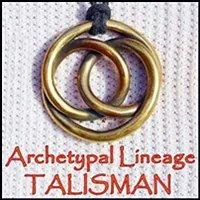
- Send A Signal That You Are Preparing Yourself To Jack-In To Your Archetypal Lineage By Wearing Your Archetypal Lineage Talisman- Matrix Code - POSSSKIL.00 - Make Your Possibilitator Website- Matrix Code - POSSSKIL.00- Just Do It! - Your Trainer Website is not about you. - Your Trainer Website is about what you stand for, what you can make possible, your resources, and your Bright Principles. - How do you think people are going to find you if you don't put yourself out there? - You may need to do whatever - Emotional Healing Processes- Just Do Them!
- Make Your Possibilitator Website- Matrix Code - POSSSKIL.00- Just Do It! - Your Trainer Website is not about you. - Your Trainer Website is about what you stand for, what you can make possible, your resources, and your Bright Principles. - How do you think people are going to find you if you don't put yourself out there? - You may need to do whatever - Emotional Healing Processes- Just Do Them!  - Navigate Your Own Possibility Team- Matrix Code - POSSSKIL.00- Two reasons: - One, creating, maintaining, and replacing yourself as the main spaceholder in your own Possibility Team builds huge amount of matrix. Matrix to hold space, matrix to take feedback, matrix to invent, matrix to be responsible, matrix to go non linear, matrix to connect and keep connection, matrix to be the person who would navigate a Possibility for a year, two years, .... - Second, this is how you start building your real circle, the circle of people that your qualities of Being, your Bright Principles and your Archetypal Lineage are feeding. Building your circle happens one person at a time, one legend at a time, one Team/ Work-Talk / Workshop at a time. Those are the people who will come to your Expand The Box. - EXPERIMENT:Commit. Simply commit to start a Possibility Team in your living room - Online or Physical. If your commitment is authentic, it will start. Commit to be there each week, same time, same place - Thursday night 19.30 at this address or at this Zoom link.
- Navigate Your Own Possibility Team- Matrix Code - POSSSKIL.00- Two reasons: - One, creating, maintaining, and replacing yourself as the main spaceholder in your own Possibility Team builds huge amount of matrix. Matrix to hold space, matrix to take feedback, matrix to invent, matrix to be responsible, matrix to go non linear, matrix to connect and keep connection, matrix to be the person who would navigate a Possibility for a year, two years, .... - Second, this is how you start building your real circle, the circle of people that your qualities of Being, your Bright Principles and your Archetypal Lineage are feeding. Building your circle happens one person at a time, one legend at a time, one Team/ Work-Talk / Workshop at a time. Those are the people who will come to your Expand The Box. - EXPERIMENT:Commit. Simply commit to start a Possibility Team in your living room - Online or Physical. If your commitment is authentic, it will start. Commit to be there each week, same time, same place - Thursday night 19.30 at this address or at this Zoom link. - Build Your Circle- Matrix Code - POSSSKIL.00
- Build Your Circle- Matrix Code - POSSSKIL.00 - Give Worktalks Regularly- Matrix Code - POSSSKIL.00
- Give Worktalks Regularly- Matrix Code - POSSSKIL.00 - Deliver Workshops Regularly- Matrix Code - POSSSKIL.00
- Deliver Workshops Regularly- Matrix Code - POSSSKIL.00 - Begin Delivering Emotinal Healing Processes- Matrix Code - POSSSKIL.00
- Begin Delivering Emotinal Healing Processes- Matrix Code - POSSSKIL.00 - Participate In Rage Club- Matrix Code - POSSSKIL.00 - Participate In Fear Club- Matrix Code - POSSSKIL.00 - Participate In Rage Club Spaceholder Training- Matrix Code - POSSSKIL.00
- BASIC TRANSFORMATION SKILLS
- Participate In Rage Club- Matrix Code - POSSSKIL.00 - Participate In Fear Club- Matrix Code - POSSSKIL.00 - Participate In Rage Club Spaceholder Training- Matrix Code - POSSSKIL.00
- BASIC TRANSFORMATION SKILLS - Learning Spiral- Matrix Code - POSSSKIL.00 - Become Centered- Matrix Code - POSSSKIL.00 - Become Grounded- Matrix Code - POSSSKIL.00 - Become Bubbled- Matrix Code - POSSSKIL.00 - First Position: Centered, Grounded, Bubbled- Matrix Code - POSSSKIL.00 - 13 Tools- Matrix Code - POSSSKIL.00 - Energetic Sword of Clarity- Matrix Code - POSSSKIL.00 - Scanning 5 Bodies- Matrix Code - POSSSKIL.00 - Unmix Your Emotions- Matrix Code - POSSSKIL.00 - Become Unhookable- Matrix Code - POSSSKIL.00 - Decontaminate Your Adult Ego State From your Gremlin, Child, and Parent Ego States- Matrix Code - POSSSKIL.00
- Learning Spiral- Matrix Code - POSSSKIL.00 - Become Centered- Matrix Code - POSSSKIL.00 - Become Grounded- Matrix Code - POSSSKIL.00 - Become Bubbled- Matrix Code - POSSSKIL.00 - First Position: Centered, Grounded, Bubbled- Matrix Code - POSSSKIL.00 - 13 Tools- Matrix Code - POSSSKIL.00 - Energetic Sword of Clarity- Matrix Code - POSSSKIL.00 - Scanning 5 Bodies- Matrix Code - POSSSKIL.00 - Unmix Your Emotions- Matrix Code - POSSSKIL.00 - Become Unhookable- Matrix Code - POSSSKIL.00 - Decontaminate Your Adult Ego State From your Gremlin, Child, and Parent Ego States- Matrix Code - POSSSKIL.00 - Owning Your Gremlin Phase 1- Matrix Code - POSSSKIL.00 - Shift Your Identity- Matrix Code - POSSSKIL.00 - 7 Core Skills- Matrix Code - POSSSKIL.00 - Owning Your Gremlin - Phase 2- Matrix Code - POSSSKIL.00 - Fair / Unfair Conversations- Matrix Code - POSSSKIL.00
- Owning Your Gremlin Phase 1- Matrix Code - POSSSKIL.00 - Shift Your Identity- Matrix Code - POSSSKIL.00 - 7 Core Skills- Matrix Code - POSSSKIL.00 - Owning Your Gremlin - Phase 2- Matrix Code - POSSSKIL.00 - Fair / Unfair Conversations- Matrix Code - POSSSKIL.00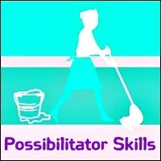
- Being The Janitor- Matrix Code - POSSSKIL.00- Radically responsible reality - the One Law - is that whatever is not handled in the Training Space to create the sanctuary aerodrome of the Training Space is your job. When you are serving the Space, then by handling the jobs you notice that need doing, you are doing what the Space needs. Every mess is your mess. You are the Janitor of the Space. - Conscious Theater- Matrix Code - POSSSKIL.00 - Become Money- Matrix Code - POSSSKIL.00 - Heal Your Technopenuriaphobia- Matrix Code - POSSSKIL.00 - Use The Trainer Alphabet- Matrix Code - POSSSKIL.00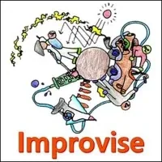
- Aliveness Through Ongoing Improvisation- Matrix Code - POSSSKIL.00- Stay awesomely Present and Improvise. - Ego State- Matrix Code - POSSSKIL.00 - POSSIBILITATOR SPACE CREATION AND NAVIGATION SKILLS - Greeting the Presiding Deity of the Space- Matrix Code - POSSSKIL.00 - Notice What You Notice- Notice What You Notice With- Notice What You Avoid Noticing- Notice Who In You Is Doing The Noticing And Why- Matrix Code - POSSSKIL.00- pay attention to your attention.- For - 10 min, everyday for week, practice putting your attention on your attention (your awareness on what you are aware of). During those 20 minutes, pay attention where your attention wonders.- Notice and write down - in details and concision - the sentences, the images, the needs, the stories, the voices where you attention wonders to without judgement about them. If criticisms do come up write them down without judgement about your judgement! - Notice and write down next to each sentence which part of you is putting its attention on that particular story (Box, Being, Gremlin, Child/Parent/Demon Ego State, one of your 5 bodies, Bright Principles, Archetypal Lineages, your mother/father, etc...). - Notice and write down what is the purpose that drives this part of you to drive your attention to that particular story. - Notice how your attention wavers from one thought to the next. - Notice what the survival patterns of your attention. Do not judged it, simply notice it. - Your clients have the similar survival strategy as you. If you can't notice them in yourself, you won't be able to notice them in them either. - Wake Yourself Up- Matrix Code - POSSSKIL.00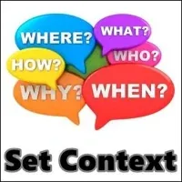
- Set Context- Matrix Code - POSSSKIL.00- You have so many options to choose from: - You can Set the Context of a Space before you create the Space. - You can create the Space before you Set the Context of the Space. - You can Set the Context of a Space as a way of Creating the Space. - Your choice often depends on what dynamics and forces are already alive in a physical space or in individuals in the people you detect from your 5-Body Scanning. - Eight Points- Matrix Code - POSSSKIL.00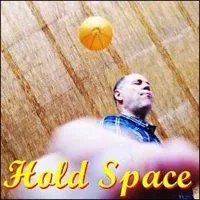
- Hold Space- Matrix Code - POSSSKIL.00 - Call In Bright Principles- Matrix Code - POSSSKIL.00 - Navigate Space- Matrix Code - POSSSKIL.00 - Conscious Use of Your Gremlin- Matrix Code - POSSSKIL.00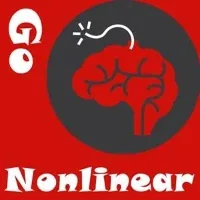
- Go Nonlinear- Matrix Code - POSSSKIL.00 - Go Unreasonable- Matrix Code - POSSSKIL.00 - Make, Find, and Use Doorways- Matrix Code - POSSSKIL.00- You can only go through a Doorway when you are at the Doorway. - You can only see a Doorway when you have the Experiential Distinctions to see the Doorway. - You can only make a Doorway when you can create a Metaconversation, ask a Nonlinear Question, or Pull The Rug Out from under a Space. - Make And Use Side Doors- Matrix Code - POSSSKIL.00- Put your shoulder against the wall. - Make sure you are in contact with everyone in the Space. - Lean through. - Put your Grounding Cord and Point Of Origin into the new Space. - Make And Use Metaconversations- Matrix Code - POSSSKIL.00- Being able to create a conversation about the conversation (a 'metaconversation') creates the possibility of Possibility. - Reminding Factor- Matrix Code - POSSSKIL.00 - POSSIBILITATOR RELATING SKILLS - With Regards To Being A Possibilitator Build Your Practice Teams- Matrix Code - POSSSKIL.00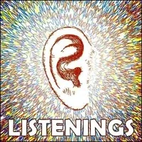
- 5 Listenings- Matrix Code - POSSSKIL.00- 5 LISTENINGS 1. Normal Neurotic, 2. Adult / Active, 3. Possibility Listening, 4. Discovery Listening, 5. Listening to the Universe - 7 Speakings- Matrix Code - POSSSKIL.00- 7 SPEAKINGS 1. Normal Neurotic, 2. Discussion (either Neurotic or Adult), 3. Adult Listening, 4. Possibility Listening, 5. Discovery Speaking, 6. Dragon Speaking, 7. Speaking from the Void. - Stop Using Roadblocks- Matrix Code - POSSSKIL.00 - Relationship as a Space of Possibility- Matrix Code - POSSSKIL.00 - Relationship as a Gremlin-Free Space- Matrix Code - POSSSKIL.00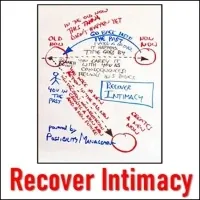
- Recover Intimacy- Matrix Code - POSSSKIL.00- A Possibility Management transformation process. - Entering Archetypal Ego State Through the Adult Ego State- Matrix Code - POSSSKIL.00 - Activate Your Inner Resources For Connection- Matrix Code - POSSSKIL.00 - Negotiate Intimacy- Matrix Code - POSSSKIL.00 - Gain Intimacy Journeyer Skills- Matrix Code - POSSSKIL.00 - Archetypal Feminine and Masculine- Matrix Code - POSSSKIL.00 - Archiamory- Matrix Code - POSSSKIL.00 - Being With- Matrix Code - POSSSKIL.00 - Take Responsibility For The 5 Controls- Matrix Code - POSSSKIL.00 - Source Archetypal Love- Matrix Code - POSSSKIL.00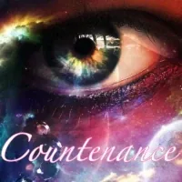
- Navigate To Undefended Countenance- Matrix Code - POSSSKIL.00 - Woman Making- Matrix Code - POSSSKIL.00 - Man Making- Matrix Code - POSSSKIL.00 - Navigate Three Domains Of Love- Matrix Code - POSSSKIL.00 - Navigate To And Deploy Each Person's Shtick- Matrix Code - POSSSKIL.00- Shtick is a source of authentic humor (as opposed to unconscious Gremlin humor which is not appropriate in Training spaces). - If you do not have your shtick then the nonlinear possibilities created through humor are missing. Your shtick is your personal style of humor and nonlinear quirks. - Every Trainer needs to develop and deliver their unique personal shtick until it can fill up the whole space and take the space in nonlinear directions. Using your shtick is often a conscious use of your Gremlin. - You already know that my personal shtick includes burping, farting, side-talking with my co-trainer, being overwhelmed with surprise when big Gremlins or big Boxes show up, making exaggerated or funny faces, Pirate jokes, eating gigantic plates of chocolate during while watching action movies late at night, group hugs, and so on. - Possibility Labs need your humor. Participants need do see your shtick. Participants need to fall in love with your playful enthusiasm for this work and for the simplicity of co-creating their bright future. - PLabs are not just about battling people's Box and Gremlin to death. - TRANSFORMATION SKILLS - Practice 3 Phase Healing On Yourself And With Others- Matrix Code - POSSSKIL.00
- Practice 3 Phase Healing On Yourself And With Others- Matrix Code - POSSSKIL.00 - With Regards To Being A Possibilitator Ongoingly Distinguish Feelings From Emotions In Real Time- Matrix Code - POSSSKIL.00 - With Regards To Being A Possibilitator Practice Using The Golden Key In Your Conversations- Matrix Code - POSSSKIL.00 - With Regards To Being A Possibilitator Practice Unmixing Emotions In Yourself And Others- Matrix Code - POSSSKIL.00 - With Regards To Being A Possibilitator Practice Delivering Emotional Healing Processes- Matrix Code - POSSSKIL.00 - With Regards To Being A Possibilitator Transform Being Abused Into Skills For Navigating Space And Creating Clarity and Possibility- Matrix Code - POSSSKIL.00 - Vacuum Learning- Matrix Code - POSSSKIL.00
- With Regards To Being A Possibilitator Ongoingly Distinguish Feelings From Emotions In Real Time- Matrix Code - POSSSKIL.00 - With Regards To Being A Possibilitator Practice Using The Golden Key In Your Conversations- Matrix Code - POSSSKIL.00 - With Regards To Being A Possibilitator Practice Unmixing Emotions In Yourself And Others- Matrix Code - POSSSKIL.00 - With Regards To Being A Possibilitator Practice Delivering Emotional Healing Processes- Matrix Code - POSSSKIL.00 - With Regards To Being A Possibilitator Transform Being Abused Into Skills For Navigating Space And Creating Clarity and Possibility- Matrix Code - POSSSKIL.00 - Vacuum Learning- Matrix Code - POSSSKIL.00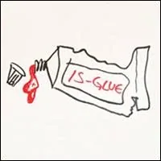
- Is-Glue Dissolver- Matrix Code - POSSSKIL.00 - Make Do-Overs- Matrix Code - POSSSKIL.00 - Pull The Rug Out From Under The Space- Matrix Code - POSSSKIL.00 - Self Surgery- Matrix Code - POSSSKIL.00
- Pull The Rug Out From Under The Space- Matrix Code - POSSSKIL.00 - Self Surgery- Matrix Code - POSSSKIL.00 - With Regards To Being A Possibilitator Check Your Memetic Constructs- Matrix Code - POSSSKIL.00 - With Regards To Being A Possibilitator Bypass Mind Machines- Matrix Code - POSSSKIL.00- When we - the - General Memetics Team- write up the process of bypassing Your Mind Machines, just do it.- Find a fellow trainer you trust who is willing to hold space for you while you go through this process. Or even better who is willing to also go through the process so that you can do it for each other. Simple. Clear. - Bypassing Your Mind Machines is efficient. Your life will be different after that!
- With Regards To Being A Possibilitator Check Your Memetic Constructs- Matrix Code - POSSSKIL.00 - With Regards To Being A Possibilitator Bypass Mind Machines- Matrix Code - POSSSKIL.00- When we - the - General Memetics Team- write up the process of bypassing Your Mind Machines, just do it.- Find a fellow trainer you trust who is willing to hold space for you while you go through this process. Or even better who is willing to also go through the process so that you can do it for each other. Simple. Clear. - Bypassing Your Mind Machines is efficient. Your life will be different after that!  - With Regards To Being A Possibilitator Sew Up Your Brain Splits- Matrix Code - POSSSKIL.00
- With Regards To Being A Possibilitator Sew Up Your Brain Splits- Matrix Code - POSSSKIL.00 - Document Who Your Clients Become- Matrix Code - POSSSKIL.00 - With Regards To Being A Possibilitator Establish A Practice Of Morphing Yourself And Your Circumstances- Matrix Code - POSSSKIL.00 - Phoenix Process- Matrix Code - POSSSKIL.00 - Torus Technology- Matrix Code - POSSSKIL.00 - Purple Card- Matrix Code - POSSSKIL.00 - Resistance Decision Making- Matrix Code - POSSSKIL.00 - Weapons On The Table- Matrix Code - POSSSKIL.00 - Poop On The Table- Matrix Code - POSSSKIL.00- Coaching for Presence in Reality. - Frying Pan- Matrix Code - POSSSKIL.00 - Wok- Matrix Code - POSSSKIL.00
- Document Who Your Clients Become- Matrix Code - POSSSKIL.00 - With Regards To Being A Possibilitator Establish A Practice Of Morphing Yourself And Your Circumstances- Matrix Code - POSSSKIL.00 - Phoenix Process- Matrix Code - POSSSKIL.00 - Torus Technology- Matrix Code - POSSSKIL.00 - Purple Card- Matrix Code - POSSSKIL.00 - Resistance Decision Making- Matrix Code - POSSSKIL.00 - Weapons On The Table- Matrix Code - POSSSKIL.00 - Poop On The Table- Matrix Code - POSSSKIL.00- Coaching for Presence in Reality. - Frying Pan- Matrix Code - POSSSKIL.00 - Wok- Matrix Code - POSSSKIL.00 - M.E.S.S Process- Matrix Code - POSSSKIL.00 - With Regards To Being A Possibilitator Deliver A Wisdom Counsel For A Team, Group, Or Project- Matrix Code - POSSSKIL.00
- M.E.S.S Process- Matrix Code - POSSSKIL.00 - With Regards To Being A Possibilitator Deliver A Wisdom Counsel For A Team, Group, Or Project- Matrix Code - POSSSKIL.00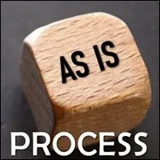
- As-Is What Was- Matrix Code - POSSSKIL.00 - Journey Into The Earth- Matrix Code - POSSSKIL.00 - Connecting with the Worthing Healers- Matrix Code - POSSSKIL.00
- Connecting with the Worthing Healers- Matrix Code - POSSSKIL.00 - Dark Matter Therapy- Matrix Code - POSSSKIL.00 - Facing Into Gremlin- Matrix Code - POSSSKIL.00- Gremlin initiation is not linear. When you say 'Gremlin initiation', I guess you are referring to the Gremlin Hunting process in Expand The Box where participants get the chance to find the name of their Gremlin. Gremlin Hunting is one among many Gremlin initiations. - From experience, I can tell you that it is not because participants know their Gremlin's name that their Gremlin are all-of-a-sudden initiated and therefore no longer unconscious in the space. You can draw from your own experience how much work it takes to distinguish between you and your Gremlin. - Facing into unconscious Gremlin will be your job as a Trainer for as long as you are a Trainer. If you think you can be in a space where you don't have to watch out for Gremlin, you are asleep. The underworld is endless, Gremlin is always there. - Feeling tired is a Gremlin story. A proposal is that you can change your strategy. You can put your Gremlin to work watching out for other people's Gremlin and finding more and more effective and elegant technology to put the Gremlin strategies on the table. And have High-Level Fun doing this. - Distinctions - as it seems you have realized - can only take you and your participants so far. As the spaceholder, to go to the next level, you will need to face into their Gremlin behaviors and strategy in public. - It is wonderful that they are hungry. If they didn't have the necessity you would not have anything to work with. Lean on their necessity. Stand next to them, what do they need? what are they missing? - Here are some experiments that you can do with them:
- Have them list the 50 favorite Gremlin food. They shouldn't stop before they have 50. You can ask them every time you meet if they have their 50 food. They can notice when their Gremlin are putting them to sleep in this task so they will not have the clarity.
- How are their Gremlin still playing victim in their life?
- How are their Gremlin destroying intimacy in their life?
- Who their Gremlin are they still blaming for their life?
- How are they still using their Sexual Energy as weapon in their lives?
- The mechanisms of Assumptions - Expectations - Resentment. Who are their Gremlin choosing to resent in their life?
- On and on and on... You get to create the next 20 Gremlin questions-experiments.
Most of those you can do in groups of 3 with Possibilitator, Listener and Coach.
- Dark Matter Therapy- Matrix Code - POSSSKIL.00 - Facing Into Gremlin- Matrix Code - POSSSKIL.00- Gremlin initiation is not linear. When you say 'Gremlin initiation', I guess you are referring to the Gremlin Hunting process in Expand The Box where participants get the chance to find the name of their Gremlin. Gremlin Hunting is one among many Gremlin initiations. - From experience, I can tell you that it is not because participants know their Gremlin's name that their Gremlin are all-of-a-sudden initiated and therefore no longer unconscious in the space. You can draw from your own experience how much work it takes to distinguish between you and your Gremlin. - Facing into unconscious Gremlin will be your job as a Trainer for as long as you are a Trainer. If you think you can be in a space where you don't have to watch out for Gremlin, you are asleep. The underworld is endless, Gremlin is always there. - Feeling tired is a Gremlin story. A proposal is that you can change your strategy. You can put your Gremlin to work watching out for other people's Gremlin and finding more and more effective and elegant technology to put the Gremlin strategies on the table. And have High-Level Fun doing this. - Distinctions - as it seems you have realized - can only take you and your participants so far. As the spaceholder, to go to the next level, you will need to face into their Gremlin behaviors and strategy in public. - It is wonderful that they are hungry. If they didn't have the necessity you would not have anything to work with. Lean on their necessity. Stand next to them, what do they need? what are they missing? - Here are some experiments that you can do with them:
- Have them list the 50 favorite Gremlin food. They shouldn't stop before they have 50. You can ask them every time you meet if they have their 50 food. They can notice when their Gremlin are putting them to sleep in this task so they will not have the clarity.
- How are their Gremlin still playing victim in their life?
- How are their Gremlin destroying intimacy in their life?
- Who their Gremlin are they still blaming for their life?
- How are they still using their Sexual Energy as weapon in their lives?
- The mechanisms of Assumptions - Expectations - Resentment. Who are their Gremlin choosing to resent in their life?
- On and on and on... You get to create the next 20 Gremlin questions-experiments.
Most of those you can do in groups of 3 with Possibilitator, Listener and Coach.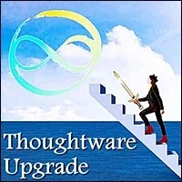
- The Map Is Not The Territory- Matrix Code - POSSSKIL.00- And that’s a feature, the reason the map exists. - The phrase reminds us not confuse the diagram or model or overview of the situation with the situation itself. Because they’re not the same. - We make a map so we can leave things out. - By leaving things out, we can help people focus on the core concepts we’re trying to get across. And so, the map of the London subway is not actually the London subway. In fact, it’s not even geographically accurate. That’s okay. The job of the map isn’t to show us precisely where each station is, the job is to make it easier to get around London by showing us a theory of the subway. - And the words someone uses don’t accurately convey everything they’re feeling and thinking. They simply stake out some of that in a way that the speaker hopes will express the point they’re trying to make. - When we decide what to leave out, we’ve made a series of decisions about the story we’re trying to tell with the parts we leave in. - POSSIBILITATOR LEGEND MAKING SKILLS - With Regards To Being A Possibilitator Prove It: Create And Manage Possibility: Breathe Possibility Because The Treasure Grows As You Give It Away- Matrix Code - POSSSKIL.00 - With Regards To Being A Possibilitator Write And Publish Articles Which Document Your Path So Others Can More Easily Inhabit New Territories With You- Matrix Code - POSSSKIL.00 - With Regards To Being A Possibilitator Make Your Website So Others Can More Easily Find You And Connect With You- Matrix Code - POSSSKIL.00- Take A Stand for the world you are inventing and inhabiting. Say what it is and how it goes so that others can decide if they want the kinds of energetic food and experiences you are creating. - With Regards To Being A Possibilitator Write And Publish A Monthly Newsletter To Feed Your Circle- Matrix Code - POSSSKIL.00
- With Regards To Being A Possibilitator Make Your Website So Others Can More Easily Find You And Connect With You- Matrix Code - POSSSKIL.00- Take A Stand for the world you are inventing and inhabiting. Say what it is and how it goes so that others can decide if they want the kinds of energetic food and experiences you are creating. - With Regards To Being A Possibilitator Write And Publish A Monthly Newsletter To Feed Your Circle- Matrix Code - POSSSKIL.00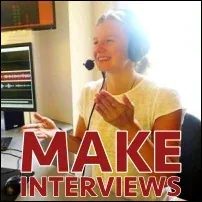
- With Regards To Being A Possibilitator Interview Other Possibilitators To Call Forth And Share Their Clarity And Inspiration- Matrix Code - POSSSKIL.00 - With Regards To Being A Possibilitator Write And Publish Scripts For TV Series, Full Length Feature Films, Shorts, And Documentaries About The Emergence Of Archiarchy- Matrix Code - POSSSKIL.00 - With Regards To Being A Possibilitator Write Up The New Processes You Invent With Your Clients To Share With The Global Team Of Possibilitators- Matrix Code - POSSSKIL.00- Please download and fill out the - Process Write-Up Formfrom- http://pmprocesses.mystrikingly.com, then send your- Process Write Upsto- Clinton Callahanand- Anne-Chloé Destremauto be checked and uploaded to the website. Thank you. - With Regards To Being A Possibilitator Establish Yourself As A Possibility Coach- Matrix Code - POSSSKIL.00- Please check - http://10doorways.mystrikingly.comto find the recommended steps for practicing and pricing your Possibility Coaching services.
- With Regards To Being A Possibilitator Establish Yourself As A Possibility Coach- Matrix Code - POSSSKIL.00- Please check - http://10doorways.mystrikingly.comto find the recommended steps for practicing and pricing your Possibility Coaching services. - With Regards To Being A Possibilitator Establish Yourself As A Possibility Mediator- Matrix Code - POSSSKIL.00
- With Regards To Being A Possibilitator Establish Yourself As A Possibility Mediator- Matrix Code - POSSSKIL.00 - With Regards To Being A Possibilitator Establish Yourself As A Possibility Psychologist- Matrix Code - POSSSKIL.00 - With Regards To Being A Possibilitator Establish Yourself As A Possibility Acting Coach- Matrix Code - POSSSKIL.00
- With Regards To Being A Possibilitator Establish Yourself As A Possibility Psychologist- Matrix Code - POSSSKIL.00 - With Regards To Being A Possibilitator Establish Yourself As A Possibility Acting Coach- Matrix Code - POSSSKIL.00 - With Regards To Being A Possibilitator Clarify Your Intentions To Make Them Conscious- Matrix Code - POSSSKIL.00 - With Regards To Being A Possibilitator There Are No Holidays: Walk Your Talk- Matrix Code - POSSSKIL.00
- With Regards To Being A Possibilitator Clarify Your Intentions To Make Them Conscious- Matrix Code - POSSSKIL.00 - With Regards To Being A Possibilitator There Are No Holidays: Walk Your Talk- Matrix Code - POSSSKIL.00 - With Regards To Being A Possibilitator Generate Accountability- Matrix Code - POSSSKIL.00
- With Regards To Being A Possibilitator Generate Accountability- Matrix Code - POSSSKIL.00 - With Regards To Your Place In The Possibilitator Gameworld Bring In A Couple Apprentices And Empower Them To Take Your Place- Matrix Code - POSSSKIL.00
- With Regards To Your Place In The Possibilitator Gameworld Bring In A Couple Apprentices And Empower Them To Take Your Place- Matrix Code - POSSSKIL.00 - With Regards To Being A Possibilitator Establish An Ongoing Tsunami Of Legend Making Results- Matrix Code - POSSSKIL.00 - With Regards To Your Possibilitator Specialty Write The Book- Matrix Code - POSSSKIL.00
- With Regards To Being A Possibilitator Establish An Ongoing Tsunami Of Legend Making Results- Matrix Code - POSSSKIL.00 - With Regards To Your Possibilitator Specialty Write The Book- Matrix Code - POSSSKIL.00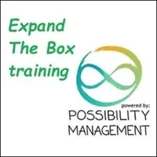
- With Regards To Empowering More Possibilitators Create An- Expand The BoxTraining In Your Area- Matrix Code - POSSSKIL.00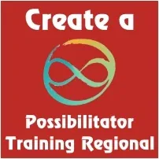
- NOTE:This website is a- Bubble in the Bubble Map- StartOver.xyz- doorway- experiments- upgrade your thoughtware- point of origin- create- possibility- knowledge- about. Your- thoughtware- with. When you- change your thoughtware- liquid state- reorganizes- feelings- emotions- upgrading your thoughtware- build matrix- consciousness- low drama- reactivity- collectively build- responsibly- TRANSKIL.00to log your Matrix Point for reading this website on- StartOver.xyz